Generative models are transforming Bayesian computational imaging, yet the field still lacks physics-aware foundation models. Current practice falls into two camps. Large foundation image models are deployed as plug-and-play priors with zero-shot approximate likelihood guidance, which introduces significant bias and computational cost. Physics-aware generative models avoid this bias, but each is tied to a specific dataset, task and instrument. We introduce BAM (Bayesian Anything Model), a lightweight foundation model for few-step, physics-aware posterior sampling that generalises robustly to unseen data and tasks, zero-shot or with minimal finetuning. BAM upgrades the operator-conditioned Reconstruct Anything Model (RAM) backbone (Terris et al., 2025) into a conditional flow map, so instrument physics is specified at inference time rather than fixed during training. BAM has just 36M parameters and is pre-trained jointly on large image corpora and libraries of forward operators. A single network then draws posterior samples in a few steps, with no likelihood approximation and no guidance weights to tune. Across linear inverse problems on FFHQ, AFHQ, LSUN, DIV2K and the Köhler camera-shake benchmark, BAM outperforms in just 3 steps both specialised models and leading zero-shot methods in sample quality, at a fraction of their computational cost. BAM gives the community an accessible entry point to generative computational imaging, lowers the economic and environmental cost of training imaging models, and opens a new path for research on physics-aware Bayesian computational imaging. Code and weights will be released upon acceptance.
We consider imaging problems $y = A x^\star + \sigma_y w$, where the forward operator $A$ and the noise level $\sigma_y$ are known at inference time, and aim to draw samples from the posterior $p(\bm x \mid y, A, \sigma_y)$ in a handful of network evaluations. BAM is a conditional flow map: it transports a Gaussian reference $\rho_1 = \mathcal N(0, \sigma_d^2 \Id)$ to the posterior $\rho_0 = p(\bm x \mid y, A, \sigma_y)$, jumping between any two times $t \geq s$ of the probability-flow ODE. It amortises over a wide family of operators and noise levels, so a single model serves the whole family, with no retraining, or at most light finetuning, when the forward model changes.
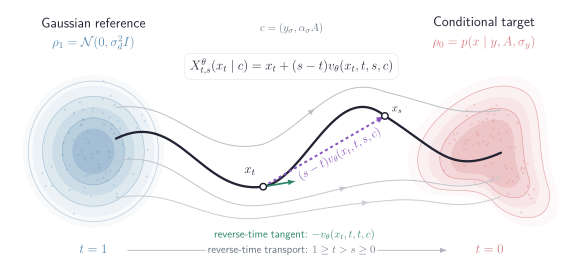
Feeding $(y, A, \sigma_y, t, s)$ directly to a small network is numerically fragile, as $\sigma_y$ and $(t,s)$ span several orders of magnitude. BAM therefore conditions on a rescaled measurement, defined through the stochastic interpolant
so that $y$ is a realisation of $\bm y_\sigma$ at $\sigma = \sigma_y$ up to the known factor $\alpha_\sigma$. The flow map is parametrised as
which enforces the boundary condition $X^\theta_{t,t}(x) = x$ by construction. The velocity $v_\theta$ is a RAM backbone (an operator-conditioned DRUNet with unrolled physics-aware updates) that receives the augmented measurement $[x_t\,;\, y_\sigma]$ and the stacked operator $[(1-t)\Id\,;\, \alpha_\sigma A]$ supplied at inference time; its two noise-level embeddings take $t$ and $s$. $\sigma_y$ enters only through the rescaling, which keeps the model lightweight.
On the diagonal ($t = s$) the velocity is fitted to the interpolant slope, and off the diagonal ($s < t$) the endpoint derivative of the map is matched to the drift of an EMA teacher $\theta^-$ at the transported point:
Images $\bm x$ are drawn from large image corpora and operators $\bm A$ from a library of forward models (super-resolution, Gaussian and motion blur, compressed sensing, inpainting, demosaicing) with $\sigma_y \in [0, 0.05]$. The measurement noise is tied to $t$ through $\sigma(t) = \sigma_{\max}\gamma t / (1-(1-\gamma)t)$, which concentrates capacity where $\bm y_\sigma$ and $\bm x_t$ carry comparable noise. The full objective adds an LPIPS term and a contrast term, active only near $s \approx 0$:
No adversarial loss is used at any stage. Starting from the public RAM checkpoint, the baseline BAM is trained for 170 hours on 8 H100 GPUs; the fine-tuned variant BAM★ continues for 16 hours on 2 H100 GPUs per target dataset, still across all problems.
Each step re-noises the current iterate to level $t_k$, pairs it with a draw of the measurement interpolant at the matching level $\sigma_k = \sigma(t_k)$, and maps it back to $s = 0$ in a single network evaluation. Independent runs give independent posterior samples.
For small $\sigma_y$ the last step is taken at $\sigma_3 = \sigma_y$, where no re-noising is needed. For large $\sigma_y$, BAM sets $\sigma_2 = \sigma_y$ and takes the last step at $\sigma_3 < \sigma_y$, drawing the interpolant by a Brownian bridge between $A\hat{\bm x}^{(2)}$ and the rescaled measurement.
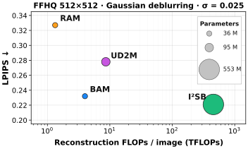
BAM advances the quality–cost Pareto frontier drawn by state-of-the-art methods: better perceptual quality (LPIPS) with fewer FLOPs per 512×512 image and far fewer parameters (bubble area). The same conclusion holds across metrics, inverse problems and datasets.
BAM is also robust to post-training quantisation: in INT8 under TensorRT it restores a 512×512 image in 80 ms instead of 281 ms on an NVIDIA A40 (3.5× faster), with a moderate loss in accuracy (PSNR −1.3 dB, LPIPS 0.400 → 0.427) and no fine-tuning after quantisation.
Across four datasets, five problems and two noise levels, a BAM variant attains the best LPIPS in 38 of 40 settings and the best CMMD in 36 of 40. BAM restores sharp, realistic textures such as fur, hair and foliage while remaining consistent with the measurements. RAM, trained as an MMSE estimator, often attains higher PSNR at the cost of smoother textures, while zero-shot and latent-space methods show noise artifacts or hallucinate content inconsistent with the observation.
DIV2K and FFHQ restoration at σy = 0.05
| Method | NFEs | DIV2K | FFHQ | ||||||
|---|---|---|---|---|---|---|---|---|---|
| PSNR↑ | LPIPS↓ | CMMD↓ | FID↓ | PSNR↑ | LPIPS↓ | CMMD↓ | FID↓ | ||
| Gaussian deblurring | |||||||||
| BAM | 3 | 24.48 | 0.35 | 0.06 | 34.4 | 29.63 | 0.25 | 0.10 | 45.0 |
| BAM★ | 3 | 24.44 | 0.35 | 0.04 | 35.6 | 30.16 | 0.25 | 0.08 | 51.6 |
| RAM | 1 | 25.63 | 0.43 | 0.44 | 52.6 | 30.54 | 0.35 | 1.15 | 94.7 |
| RAM★ | 1 | 26.00 | 0.42 | 0.34 | 47.0 | 31.53 | 0.34 | 1.07 | 92.4 |
| LATINO-PRO | 65 | 23.55 | 0.54 | 0.49 | 71.9 | 23.40 | 0.46 | 1.17 | 128.3 |
| SILO | 200 | 17.20 | 0.62 | 1.84 | 298.8 | 24.92 | 0.38 | 0.25 | 91.8 |
| I2SB | 50 | – | – | – | – | 30.24 | 0.24 | 0.02 | 44.2 |
| UD2M | 12 | – | – | – | – | 29.30 | 0.29 | 0.72 | 67.3 |
| Super-resolution | |||||||||
| BAM | 3 | 24.30 | 0.36 | 0.08 | 39.6 | 28.84 | 0.27 | 0.19 | 50.4 |
| BAM★ | 3 | 23.56 | 0.37 | 0.09 | 41.1 | 29.37 | 0.27 | 0.19 | 62.4 |
| RAM | 1 | 25.79 | 0.43 | 0.26 | 74.1 | 31.15 | 0.36 | 1.02 | 107.1 |
| RAM★ | 1 | 25.88 | 0.42 | 0.27 | 51.7 | 31.01 | 0.35 | 1.52 | 93.0 |
| LATINO-PRO | 65 | 22.82 | 0.54 | 0.59 | 95.3 | 23.18 | 0.53 | 0.90 | 146.3 |
| SILO | 200 | 16.53 | 0.64 | 2.04 | 308.4 | 25.04 | 0.37 | 0.20 | 80.7 |
| I2SB | 50 | – | – | – | – | 26.82 | 0.39 | 1.02 | 148.8 |
| UD2M | 12 | – | – | – | – | 28.16 | 0.31 | 0.30 | 82.2 |
| Inpainting | |||||||||
| BAM | 3 | 26.61 | 0.27 | 0.02 | 20.5 | 31.50 | 0.23 | 0.08 | 32.1 |
| BAM★ | 3 | 25.66 | 0.27 | 0.03 | 21.0 | 31.57 | 0.20 | 0.05 | 32.4 |
| RAM | 1 | 23.52 | 0.41 | 0.30 | 66.9 | 25.55 | 0.39 | 1.53 | 126.5 |
| RAM★ | 1 | 27.61 | 0.32 | 0.18 | 35.5 | 32.40 | 0.29 | 1.12 | 56.5 |
| LATINO-PRO | 65 | 11.25 | 0.71 | 2.01 | 282.4 | 13.44 | 0.79 | 2.63 | 305.0 |
| SILO | 200 | 12.92 | 0.73 | 2.91 | 382.4 | 17.46 | 0.52 | 1.00 | 139.4 |
| I2SB | 50 | – | – | – | – | 18.89 | 0.58 | 1.93 | 174.2 |
| UD2M | 12 | – | – | – | – | 29.29 | 0.25 | 0.21 | 45.54 |
PSNR (dB, ↑), LPIPS (↓), CMMD (↓) and FID (↓). BAM variants use three steps; BAM★ and RAM★ denote finetuning. Bold and underline mark the best and second-best values for each dataset and problem; – denotes an unavailable result.
BAM and BAM★ use three steps. Yellow boxes mark the region magnified 4× below each image. Click any image to compare it against another method with a slider.


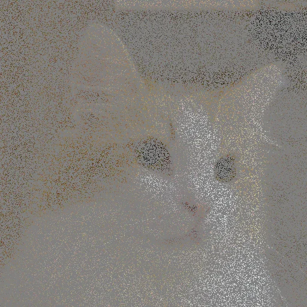
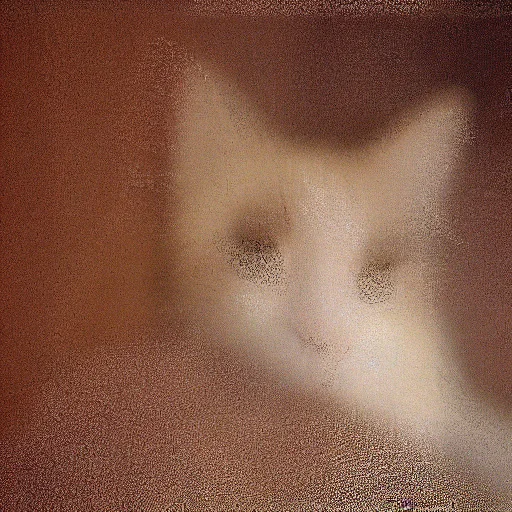
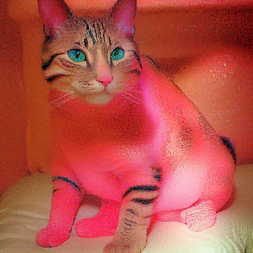
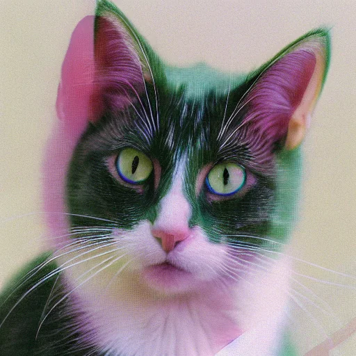
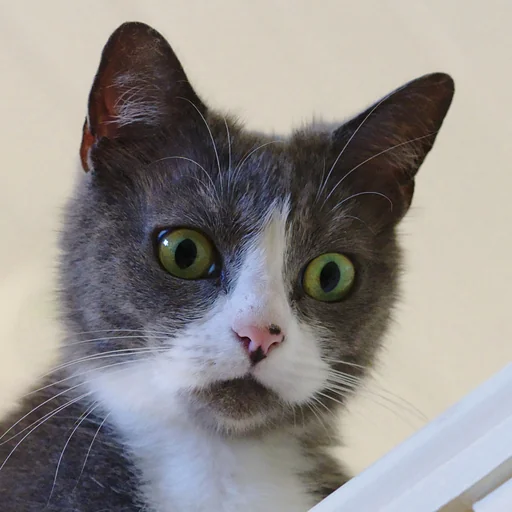
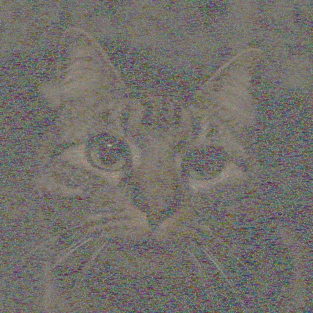
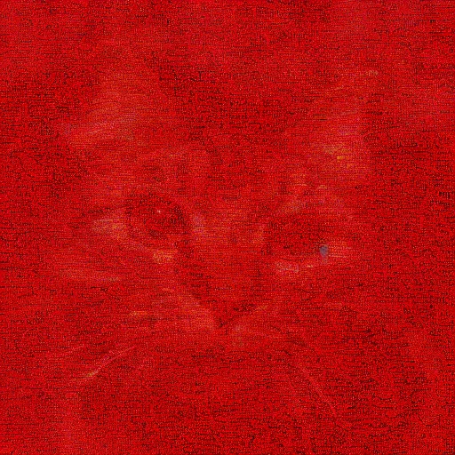
All five problems BAM is trained on, at σy ∈ {0.025, 0.05}. AFHQ and LSUN bedroom are out-of-distribution for the baseline BAM. PSNR (dB, ↑), LPIPS (↓), CMMD (↓), FID (↓); bold / underline: best / second-best value per problem, noise level and metric.
DIV2K: 64 test images. BAM and BAM★ use three steps.
| Method | NFEs | σy = 0.025 | σy = 0.05 | ||||||
|---|---|---|---|---|---|---|---|---|---|
| PSNR↑ | LPIPS↓ | CMMD↓ | FID↓ | PSNR↑ | LPIPS↓ | CMMD↓ | FID↓ | ||
| Deblurring | |||||||||
| BAM | 3 | 25.01 | 0.334 | 0.04 | 33.51 | 24.48 | 0.349 | 0.06 | 34.43 |
| BAM★ | 3 | 24.91 | 0.339 | 0.03 | 33.80 | 24.44 | 0.353 | 0.04 | 35.59 |
| RAM | 1 | 26.08 | 0.401 | 0.37 | 41.35 | 25.63 | 0.427 | 0.44 | 52.55 |
| LATINO | 8 | 23.29 | 0.473 | 0.28 | 74.62 | 22.00 | 0.514 | 0.39 | 100.27 |
| LATINO-PRO | 65 | 24.07 | 0.454 | 0.35 | 66.02 | 23.55 | 0.536 | 0.49 | 71.90 |
| TReg | 200 | 22.43 | 0.485 | 0.34 | 83.89 | 21.85 | 0.515 | 0.40 | 102.21 |
| SILO | 200 | 17.56 | 0.614 | 1.72 | 287.03 | 17.20 | 0.624 | 1.84 | 298.80 |
| Super-resolution | |||||||||
| BAM | 3 | 24.92 | 0.343 | 0.06 | 36.80 | 24.30 | 0.362 | 0.08 | 39.55 |
| BAM★ | 3 | 24.19 | 0.354 | 0.06 | 36.95 | 23.56 | 0.373 | 0.09 | 41.12 |
| RAM | 1 | 26.49 | 0.397 | 0.20 | 50.92 | 25.79 | 0.430 | 0.26 | 74.12 |
| LATINO | 8 | 24.36 | 0.478 | 0.37 | 57.15 | 22.70 | 0.542 | 0.56 | 97.24 |
| LATINO-PRO | 65 | 24.49 | 0.476 | 0.38 | 54.11 | 22.82 | 0.543 | 0.59 | 95.31 |
| TReg | 200 | 22.07 | 0.497 | 0.39 | 76.52 | 20.73 | 0.565 | 0.55 | 112.77 |
| SILO | 200 | 17.04 | 0.631 | 1.99 | 295.67 | 16.53 | 0.641 | 2.04 | 308.43 |
| Inpainting | |||||||||
| BAM | 3 | 27.31 | 0.224 | 0.01 | 17.35 | 26.61 | 0.267 | 0.02 | 20.46 |
| BAM★ | 3 | 26.56 | 0.233 | 0.02 | 17.73 | 25.66 | 0.272 | 0.03 | 21.01 |
| RAM | 1 | 23.61 | 0.399 | 0.29 | 61.78 | 23.52 | 0.412 | 0.30 | 66.93 |
| LATINO | 8 | 15.22 | 0.692 | 1.74 | 229.43 | 14.45 | 0.704 | 1.76 | 224.50 |
| LATINO-PRO | 65 | 13.73 | 0.678 | 1.79 | 270.42 | 11.25 | 0.706 | 2.01 | 282.41 |
| TReg | 200 | 15.15 | 0.727 | 1.47 | 287.30 | 14.48 | 0.748 | 1.67 | 299.14 |
| SILO | 200 | 13.08 | 0.724 | 2.85 | 378.42 | 12.92 | 0.729 | 2.91 | 382.44 |
| Demosaicing | |||||||||
| BAM | 3 | 33.37 | 0.121 | 0.01 | 7.38 | 30.48 | 0.194 | 0.02 | 12.68 |
| BAM★ | 3 | 32.61 | 0.127 | 0.01 | 8.51 | 29.85 | 0.196 | 0.02 | 14.02 |
| RAM | 1 | 30.09 | 0.341 | 0.20 | 53.56 | 28.75 | 0.385 | 0.26 | 70.95 |
| LATINO | 8 | 18.08 | 0.578 | 1.52 | 199.76 | 15.26 | 0.642 | 1.88 | 263.70 |
| LATINO-PRO | 65 | 18.58 | 0.531 | 1.28 | 163.41 | 15.42 | 0.610 | 1.67 | 248.64 |
| TReg | 200 | 19.57 | 0.529 | 0.38 | 101.76 | 18.28 | 0.594 | 0.59 | 135.35 |
| SILO | 200 | 14.92 | 0.717 | 3.19 | 380.73 | 14.63 | 0.723 | 3.00 | 389.20 |
| Compressed sensing | |||||||||
| BAM | 3 | 30.63 | 0.172 | 0.01 | 12.86 | 28.87 | 0.221 | 0.02 | 16.84 |
| BAM★ | 3 | 30.22 | 0.181 | 0.02 | 13.73 | 28.36 | 0.230 | 0.03 | 18.48 |
| RAM | 1 | 23.39 | 0.386 | 0.35 | 42.74 | 23.20 | 0.422 | 0.47 | 49.31 |
| LATINO | 8 | 16.08 | 0.660 | 2.18 | 250.92 | 13.71 | 0.700 | 2.24 | 249.40 |
| LATINO-PRO | 65 | 16.24 | 0.633 | 1.86 | 248.34 | 13.16 | 0.679 | 2.08 | 275.27 |
| TReg | 200 | 17.10 | 0.659 | 1.05 | 195.95 | 16.27 | 0.691 | 1.22 | 224.85 |
FFHQ: 64 test images. BAM and BAM★ use three steps.
| Method | NFEs | σy = 0.025 | σy = 0.05 | ||||||
|---|---|---|---|---|---|---|---|---|---|
| PSNR↑ | LPIPS↓ | CMMD↓ | FID↓ | PSNR↑ | LPIPS↓ | CMMD↓ | FID↓ | ||
| Deblurring | |||||||||
| BAM | 3 | 30.63 | 0.232 | 0.09 | 40.63 | 29.63 | 0.250 | 0.10 | 44.98 |
| BAM★ | 3 | 31.17 | 0.225 | 0.08 | 47.33 | 30.16 | 0.245 | 0.08 | 51.61 |
| RAM | 1 | 31.07 | 0.327 | 0.94 | 83.37 | 30.54 | 0.351 | 1.15 | 94.74 |
| RAM★ | 1 | 32.31 | 0.316 | 0.85 | 82.58 | 31.53 | 0.341 | 1.07 | 92.38 |
| LATINO | 8 | 25.08 | 0.377 | 0.62 | 100.28 | 22.72 | 0.428 | 0.85 | 119.48 |
| LATINO-PRO | 65 | 25.89 | 0.395 | 0.82 | 111.25 | 23.40 | 0.456 | 1.17 | 128.26 |
| TReg | 200 | 25.16 | 0.394 | 0.82 | 112.07 | 24.28 | 0.422 | 0.73 | 117.41 |
| SILO | 200 | 25.80 | 0.372 | 0.38 | 92.87 | 24.92 | 0.375 | 0.25 | 91.84 |
| I2SB | 50 | 31.20 | 0.221 | 0.01 | 36.82 | 30.24 | 0.240 | 0.02 | 44.21 |
| UD2M | 12 | 29.39 | 0.278 | 0.83 | 65.87 | 29.30 | 0.288 | 0.72 | 67.39 |
| Super-resolution | |||||||||
| BAM | 3 | 29.99 | 0.249 | 0.13 | 45.48 | 28.84 | 0.272 | 0.19 | 50.42 |
| BAM★ | 3 | 30.48 | 0.247 | 0.13 | 56.46 | 29.37 | 0.268 | 0.19 | 62.38 |
| RAM | 1 | 32.49 | 0.322 | 0.60 | 87.48 | 31.15 | 0.358 | 1.02 | 107.12 |
| RAM★ | 1 | 32.36 | 0.313 | 0.86 | 80.55 | 31.01 | 0.352 | 1.52 | 93.02 |
| LATINO | 8 | 25.53 | 0.419 | 0.66 | 99.47 | 22.18 | 0.510 | 1.13 | 141.33 |
| LATINO-PRO | 65 | 26.67 | 0.425 | 0.58 | 107.27 | 23.18 | 0.529 | 0.90 | 146.27 |
| TReg | 200 | 24.35 | 0.447 | 0.63 | 103.75 | 22.28 | 0.518 | 0.80 | 122.72 |
| SILO | 200 | 26.12 | 0.333 | 0.20 | 71.76 | 25.04 | 0.371 | 0.20 | 80.74 |
| I2SB | 50 | 26.20 | 0.387 | 1.11 | 151.20 | 26.82 | 0.393 | 1.02 | 148.82 |
| UD2M | 12 | 29.63 | 0.277 | 0.18 | 97.69 | 28.16 | 0.305 | 0.30 | 82.25 |
| Inpainting | |||||||||
| BAM | 3 | 32.90 | 0.174 | 0.04 | 21.30 | 31.50 | 0.228 | 0.08 | 32.09 |
| BAM★ | 3 | 32.93 | 0.165 | 0.04 | 24.69 | 31.57 | 0.201 | 0.05 | 32.40 |
| RAM | 1 | 25.59 | 0.399 | 1.97 | 148.63 | 25.55 | 0.386 | 1.53 | 126.45 |
| RAM★ | 1 | 33.36 | 0.249 | 0.77 | 43.27 | 32.40 | 0.288 | 1.12 | 56.50 |
| LATINO | 8 | 13.98 | 0.773 | 3.25 | 247.94 | 13.43 | 0.776 | 3.27 | 248.21 |
| LATINO-PRO | 65 | 13.87 | 0.780 | 2.53 | 272.34 | 13.44 | 0.789 | 2.63 | 304.99 |
| TReg | 200 | 14.46 | 0.742 | 2.71 | 224.36 | 13.74 | 0.756 | 2.80 | 237.75 |
| SILO | 200 | 18.55 | 0.497 | 0.87 | 133.55 | 17.46 | 0.517 | 1.00 | 139.38 |
| I2SB | 50 | 22.38 | 0.491 | 1.35 | 134.48 | 18.89 | 0.584 | 1.93 | 174.26 |
| UD2M | 12 | 33.21 | 0.216 | 0.20 | 46.81 | 29.29 | 0.254 | 0.21 | 45.54 |
| Demosaicing | |||||||||
| BAM | 3 | 36.45 | 0.119 | 0.03 | 10.95 | 33.38 | 0.202 | 0.05 | 23.77 |
| BAM★ | 3 | 36.49 | 0.114 | 0.04 | 12.70 | 33.94 | 0.167 | 0.04 | 19.25 |
| RAM | 1 | 31.95 | 0.333 | 0.57 | 101.48 | 30.78 | 0.370 | 0.66 | 110.64 |
| RAM★ | 1 | 37.36 | 0.161 | 0.34 | 18.74 | 35.07 | 0.226 | 0.46 | 32.27 |
| LATINO | 8 | 17.47 | 0.667 | 2.73 | 199.36 | 14.16 | 0.716 | 3.08 | 214.16 |
| LATINO-PRO | 65 | 18.19 | 0.635 | 1.76 | 170.99 | 13.12 | 0.743 | 2.08 | 255.00 |
| TReg | 200 | 21.15 | 0.547 | 1.37 | 125.35 | 18.87 | 0.626 | 1.78 | 159.45 |
| SILO | 200 | 20.26 | 0.510 | 1.43 | 137.00 | 21.04 | 0.472 | 0.85 | 118.79 |
| Compressed sensing | |||||||||
| BAM | 3 | 34.58 | 0.151 | 0.03 | 16.37 | 32.41 | 0.208 | 0.06 | 25.52 |
| BAM★ | 3 | 34.91 | 0.145 | 0.03 | 19.17 | 32.72 | 0.185 | 0.04 | 25.02 |
| RAM | 1 | 24.47 | 0.411 | 1.17 | 75.17 | 24.35 | 0.461 | 1.21 | 88.65 |
| RAM★ | 1 | 33.74 | 0.262 | 1.13 | 41.35 | 32.72 | 0.301 | 1.29 | 54.27 |
| LATINO | 8 | 14.55 | 0.739 | 3.45 | 217.93 | 12.28 | 0.758 | 3.59 | 234.12 |
| LATINO-PRO | 65 | 14.73 | 0.743 | 2.68 | 232.97 | 10.75 | 0.823 | 3.04 | 322.00 |
| TReg | 200 | 16.60 | 0.690 | 1.95 | 168.07 | 15.46 | 0.717 | 2.29 | 197.12 |
AFHQ: 64 test images. BAM and BAM★ use three steps.
| Method | NFEs | σy = 0.025 | σy = 0.05 | ||||||
|---|---|---|---|---|---|---|---|---|---|
| PSNR↑ | LPIPS↓ | CMMD↓ | FID↓ | PSNR↑ | LPIPS↓ | CMMD↓ | FID↓ | ||
| Deblurring | |||||||||
| BAM | 3 | 27.41 | 0.336 | 0.23 | 33.52 | 26.89 | 0.354 | 0.26 | 35.62 |
| BAM★ | 3 | 26.85 | 0.294 | 0.18 | 23.89 | 26.41 | 0.311 | 0.19 | 24.21 |
| RAM | 1 | 27.85 | 0.417 | 1.17 | 52.11 | 27.46 | 0.444 | 1.41 | 60.40 |
| LATINO | 8 | 23.37 | 0.440 | 0.48 | 64.81 | 21.48 | 0.486 | 0.50 | 71.87 |
| LATINO-PRO | 65 | 24.62 | 0.494 | 1.44 | 67.77 | 22.63 | 0.558 | 1.60 | 92.28 |
| TReg | 200 | 23.49 | 0.469 | 0.89 | 76.62 | 22.74 | 0.497 | 0.93 | 81.11 |
| SILO | 200 | 24.43 | 0.420 | 0.31 | 42.88 | 24.05 | 0.420 | 0.30 | 44.82 |
| Super-resolution | |||||||||
| BAM | 3 | 27.24 | 0.348 | 0.29 | 34.66 | 26.52 | 0.371 | 0.42 | 39.53 |
| BAM★ | 3 | 26.40 | 0.308 | 0.25 | 26.26 | 25.68 | 0.332 | 0.31 | 29.22 |
| RAM | 1 | 28.72 | 0.404 | 0.85 | 56.29 | 27.95 | 0.442 | 1.17 | 67.87 |
| LATINO | 8 | 23.27 | 0.478 | 0.92 | 70.52 | 20.48 | 0.560 | 1.35 | 92.08 |
| LATINO-PRO | 65 | 25.31 | 0.483 | 1.29 | 63.49 | 22.47 | 0.577 | 1.67 | 104.06 |
| TReg | 200 | 22.85 | 0.493 | 0.93 | 65.46 | 21.09 | 0.553 | 1.09 | 76.40 |
| SILO | 200 | 24.60 | 0.383 | 0.25 | 35.20 | 23.75 | 0.419 | 0.26 | 39.93 |
| Inpainting | |||||||||
| BAM | 3 | 29.32 | 0.223 | 0.07 | 16.09 | 28.41 | 0.277 | 0.13 | 21.87 |
| BAM★ | 3 | 29.15 | 0.209 | 0.08 | 14.33 | 27.98 | 0.257 | 0.12 | 19.36 |
| RAM | 1 | 24.73 | 0.419 | 1.11 | 66.55 | 24.68 | 0.427 | 1.00 | 62.86 |
| LATINO | 8 | 14.20 | 0.739 | 2.04 | 92.70 | 13.65 | 0.737 | 2.01 | 85.07 |
| LATINO-PRO | 65 | 13.30 | 0.796 | 2.61 | 293.10 | 12.37 | 0.817 | 2.93 | 329.01 |
| TReg | 200 | 14.09 | 0.750 | 2.33 | 104.17 | 13.47 | 0.762 | 2.25 | 100.78 |
| SILO | 200 | 20.09 | 0.585 | 0.71 | 64.51 | 19.49 | 0.631 | 1.05 | 71.92 |
| Demosaicing | |||||||||
| BAM | 3 | 34.66 | 0.129 | 0.03 | 7.86 | 31.49 | 0.215 | 0.06 | 15.77 |
| BAM★ | 3 | 34.23 | 0.125 | 0.06 | 7.56 | 30.84 | 0.204 | 0.10 | 15.08 |
| RAM | 1 | 30.67 | 0.388 | 0.73 | 62.01 | 29.42 | 0.438 | 0.89 | 73.68 |
| LATINO | 8 | 17.06 | 0.650 | 2.35 | 105.73 | 13.91 | 0.703 | 2.38 | 101.36 |
| LATINO-PRO | 65 | 18.07 | 0.614 | 1.87 | 95.46 | 13.83 | 0.708 | 2.22 | 160.66 |
| TReg | 200 | 18.83 | 0.585 | 1.92 | 97.06 | 16.63 | 0.660 | 2.35 | 114.93 |
| SILO | 200 | 21.80 | 0.466 | 0.31 | 47.84 | 21.77 | 0.477 | 0.28 | 47.71 |
| Compressed sensing | |||||||||
| BAM | 3 | 32.05 | 0.173 | 0.05 | 12.20 | 30.10 | 0.233 | 0.09 | 18.23 |
| BAM★ | 3 | 30.97 | 0.178 | 0.08 | 12.01 | 28.65 | 0.241 | 0.11 | 19.26 |
| RAM | 1 | 23.97 | 0.404 | 1.12 | 38.90 | 23.83 | 0.446 | 1.31 | 44.47 |
| LATINO | 8 | 14.71 | 0.700 | 2.16 | 89.67 | 12.48 | 0.716 | 2.25 | 85.35 |
| LATINO-PRO | 65 | 13.86 | 0.769 | 2.74 | 230.27 | 11.16 | 0.829 | 3.05 | 297.84 |
| TReg | 200 | 15.22 | 0.710 | 2.46 | 92.96 | 14.40 | 0.735 | 2.52 | 97.29 |
LSUN: 300 test images. BAM and BAM★ use three steps.
| Method | NFEs | σy = 0.025 | σy = 0.05 | ||||||
|---|---|---|---|---|---|---|---|---|---|
| PSNR↑ | LPIPS↓ | CMMD↓ | FID↓ | PSNR↑ | LPIPS↓ | CMMD↓ | FID↓ | ||
| Deblurring | |||||||||
| BAM | 3 | 25.78 | 0.154 | 1.86 | 89.35 | 25.38 | 0.160 | 2.15 | 90.52 |
| BAM★ | 3 | 26.16 | 0.155 | 1.02 | 49.41 | 25.79 | 0.160 | 1.26 | 48.28 |
| RAM | 1 | 25.97 | 0.213 | 1.92 | 77.53 | 25.58 | 0.239 | 2.20 | 87.09 |
| RAM★ | 1 | 27.25 | 0.304 | 1.87 | 76.90 | 26.59 | 0.333 | 2.11 | 86.54 |
| COSIGN | 2 | 24.74 | 0.215 | 1.08 | 43.40 | 24.60 | 0.230 | 1.43 | 44.41 |
| UD2M | 12 | 25.96 | 0.279 | 1.68 | 81.61 | 23.45 | 0.380 | 2.55 | 98.44 |
| CM4AI | 1 | 23.82 | 0.419 | 2.29 | 199.04 | 23.33 | 0.443 | 2.36 | 213.70 |
| Super-resolution | |||||||||
| BAM | 3 | 25.67 | 0.160 | 2.07 | 95.97 | 25.13 | 0.170 | 2.38 | 100.50 |
| BAM★ | 3 | 25.69 | 0.150 | 1.08 | 47.80 | 25.13 | 0.160 | 1.38 | 49.74 |
| RAM | 1 | 21.13 | 0.525 | 2.48 | 163.48 | 20.83 | 0.577 | 3.44 | 200.71 |
| RAM★ | 1 | 27.09 | 0.302 | 1.80 | 73.45 | 26.27 | 0.342 | 2.20 | 88.81 |
| COSIGN | 2 | 21.73 | 0.245 | 2.45 | 113.81 | 20.75 | 0.370 | 2.90 | 160.95 |
| UD2M | 12 | 23.50 | 0.439 | 3.40 | 114.50 | 23.78 | 0.315 | 0.67 | 48.31 |
| CM4AI | 1 | 25.78 | 0.324 | 1.76 | 128.71 | 25.52 | 0.320 | 1.57 | 123.33 |
| Inpainting | |||||||||
| BAM | 3 | 28.13 | 0.067 | 0.77 | 65.90 | 27.46 | 0.090 | 1.19 | 76.43 |
| BAM★ | 3 | 28.24 | 0.060 | 0.41 | 39.74 | 27.51 | 0.071 | 0.55 | 38.77 |
| RAM | 1 | 23.14 | 0.224 | 2.55 | 125.54 | 23.30 | 0.224 | 2.42 | 120.08 |
| RAM★ | 1 | 28.64 | 0.238 | 1.31 | 53.26 | 28.20 | 0.261 | 1.58 | 60.24 |
| Demosaicing | |||||||||
| BAM | 3 | 34.41 | 0.028 | 0.40 | 40.88 | 31.55 | 0.067 | 0.59 | 53.57 |
| BAM★ | 3 | 34.66 | 0.023 | 0.29 | 27.67 | 31.66 | 0.048 | 0.38 | 27.71 |
| RAM | 1 | 30.10 | 0.152 | 1.31 | 69.66 | 28.96 | 0.182 | 1.60 | 79.74 |
| RAM★ | 1 | 35.17 | 0.114 | 0.43 | 21.45 | 32.91 | 0.161 | 0.61 | 33.69 |
| Compressed sensing | |||||||||
| BAM | 3 | 31.90 | 0.044 | 0.49 | 49.93 | 30.08 | 0.071 | 0.75 | 60.07 |
| BAM★ | 3 | 32.34 | 0.037 | 0.32 | 29.84 | 30.46 | 0.053 | 0.41 | 29.36 |
| RAM | 1 | 22.65 | 0.205 | 2.31 | 109.29 | 22.58 | 0.238 | 2.58 | 135.76 |
| RAM★ | 1 | 29.81 | 0.246 | 1.69 | 53.40 | 29.21 | 0.271 | 1.91 | 62.45 |
Sparse-view CT. BAM extends to CT on LIDC-IDRI chest slices with 51 parallel-beam projections, a single-channel modality far from the natural images seen during pre-training. After finetuning on CT, three-step BAM samples recover fine lung vessels, and the pixelwise standard deviation over 64 draws concentrates on anatomical edges and vessels, at the same order of magnitude as the error of the posterior mean: a spatial uncertainty map at no extra training cost.
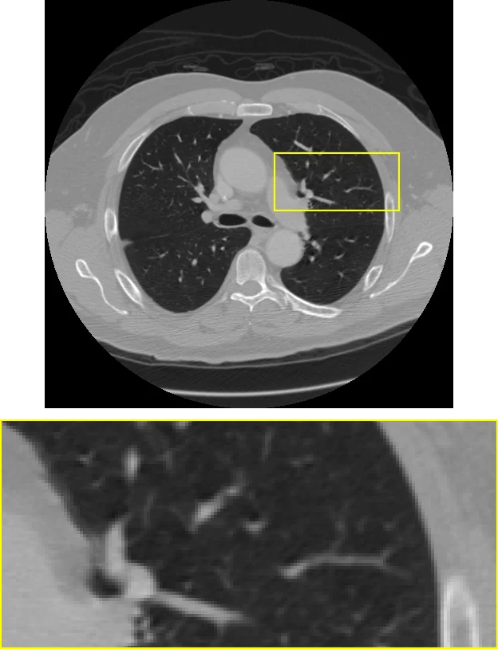
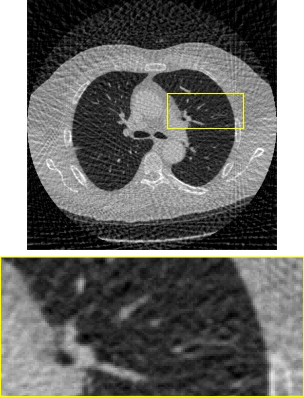
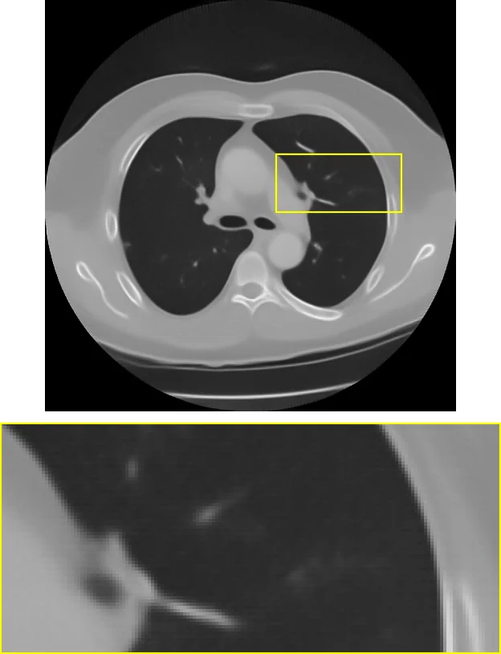
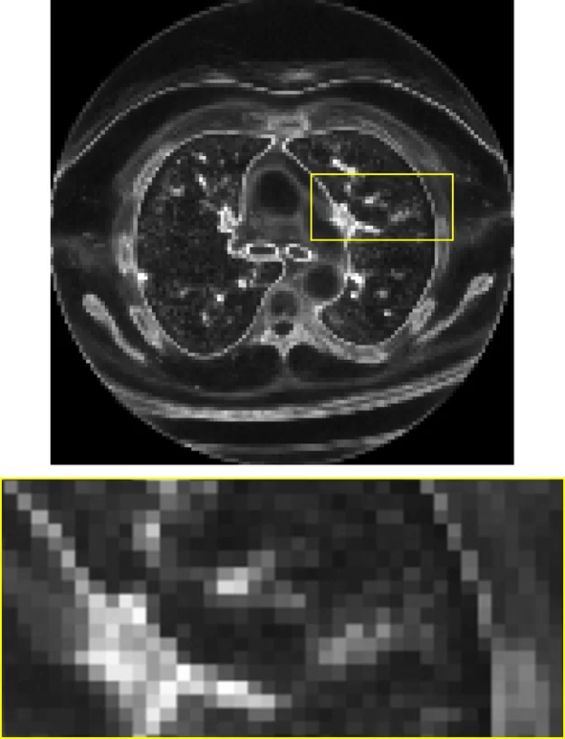
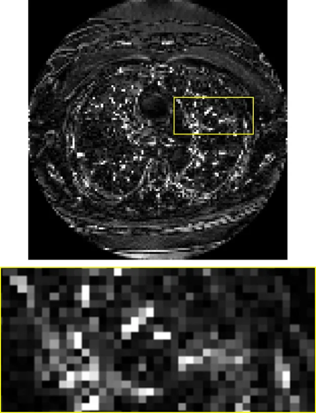
Left to right: ground truth, filtered backprojection, one BAM sample, posterior mean, standard deviation over 64 draws, and residual |GT − mean|. Yellow boxes and 4× strips show the same lung region in every panel.
BAM handles only additive Gaussian noise and linear or mildly non-linear forward operators. It is non-blind, so blind problems rely on an external operator estimate. It does not detect model misspecification, so under strong distribution shift it can return unreliable posteriors without warning. Finally, posterior sample quality was assessed empirically; formal guarantees for the learned conditional flow map remain open.
@misc{spagnoletti2026bam,
title = {{BAM!} {B}ayesian {A}nything {M}odel: a foundation model for generative computational imaging},
author = {Spagnoletti, Alessio and Kemajou Mbakam, Charlesquin and Spence, Jonathan and Almansa, Andr{\'e}s and Pereyra, Marcelo},
year = {2026}
}